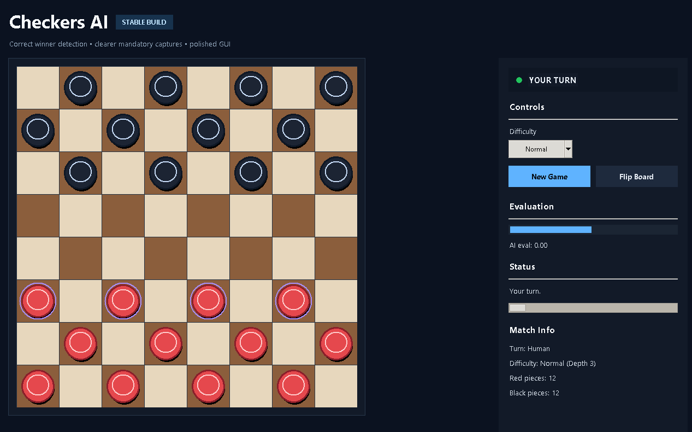

An AI-powered Checkers game built using Minimax and Alpha-Beta Pruning.
The AI uses the Minimax algorithm with Alpha-Beta pruning to choose the best move. It evaluates possible moves and predicts the opponent's response.
Clone the repo and run:
python main.py

Made by souror07